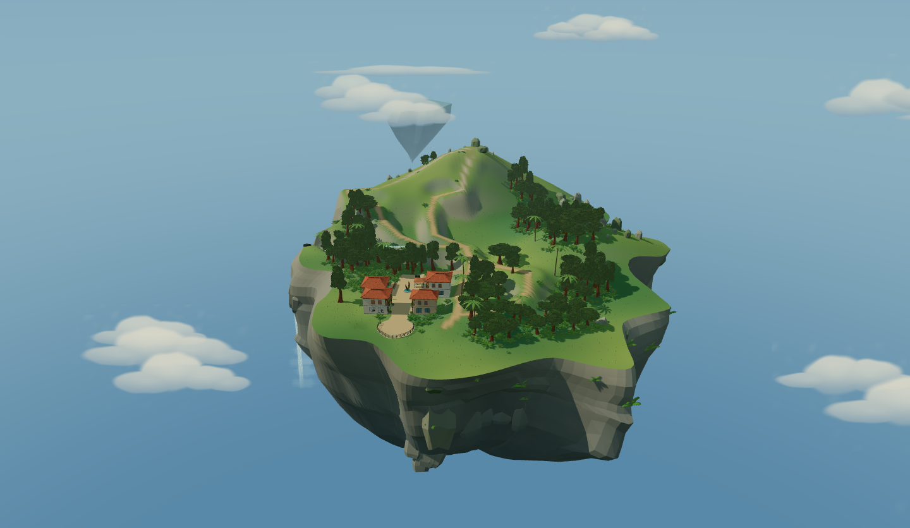
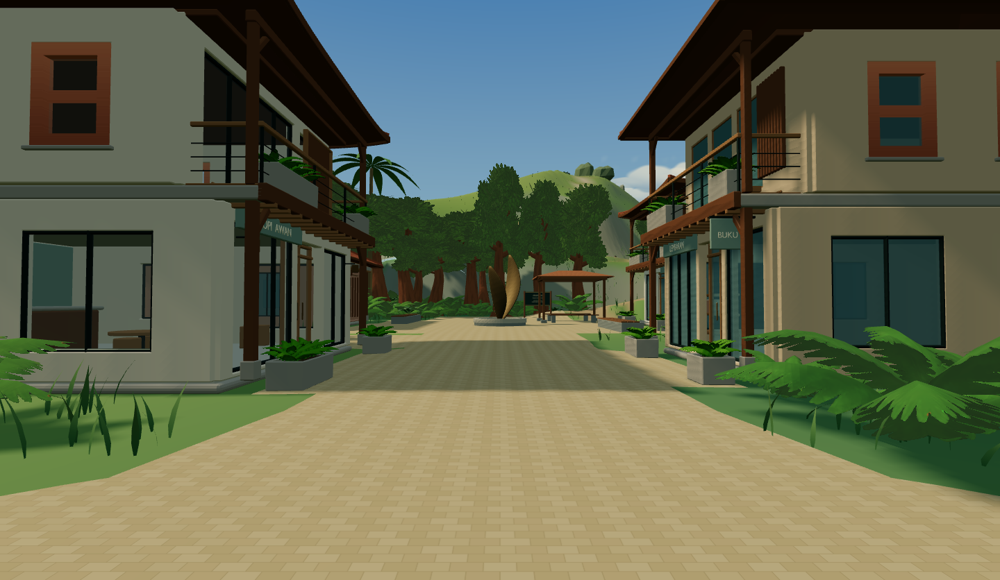
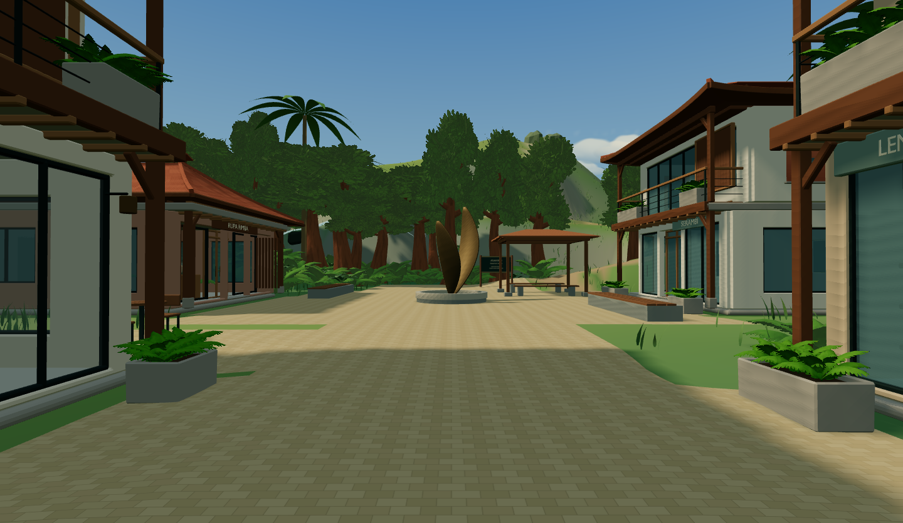
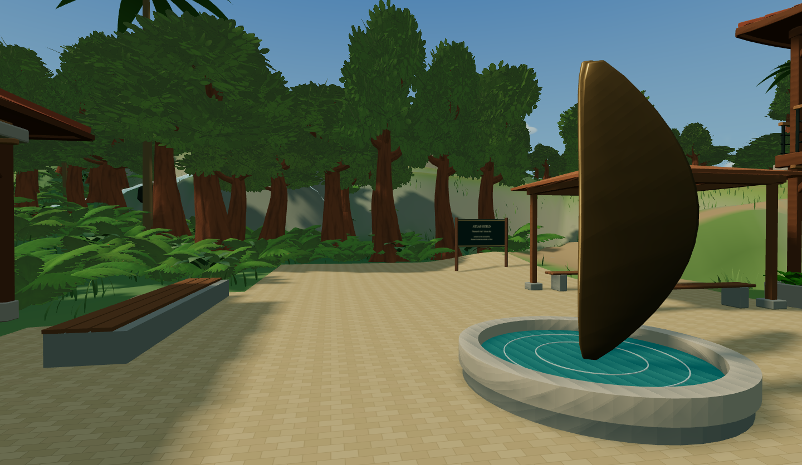
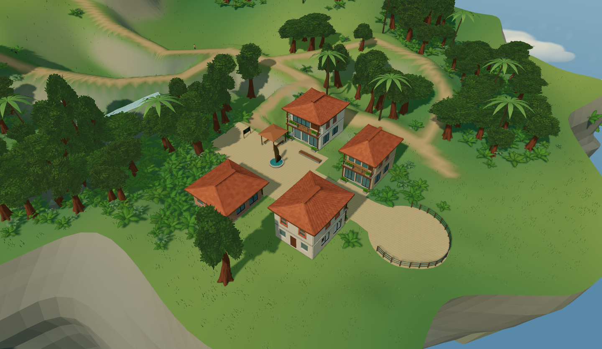
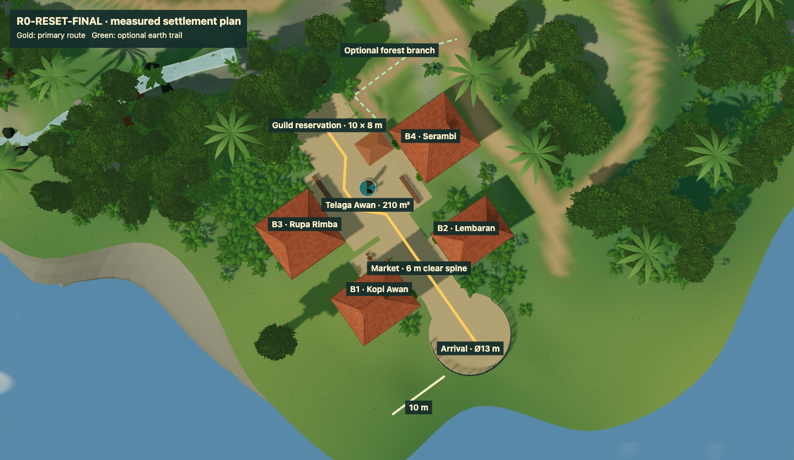

AR(N)AN Urban Atlas / R0-RESET-FINAL
One street, one civic court.
Actual local-game captures. Four approved buildings on a coordinated terrain shelf. Human visual approval is pending. No public deployment.
Measurements, tests and rollback · Reproducible cameras · Original explorer walking

1. Whole island

2. Arrival into Market Street

3. Market Street toward Telaga Awan

4. Fountain toward the Guild reservation

5. Town, terrain and forest

6. Measured circulation plan